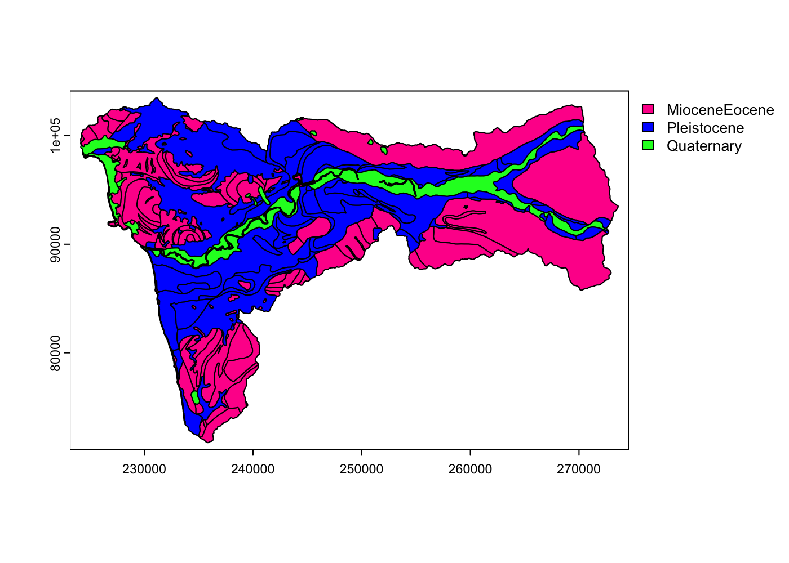
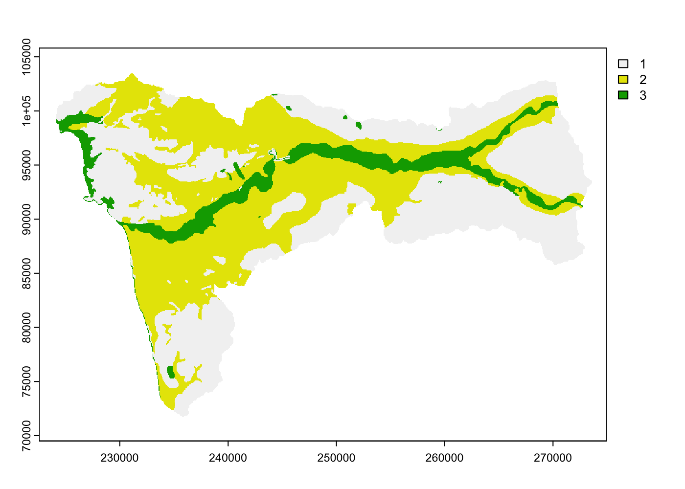
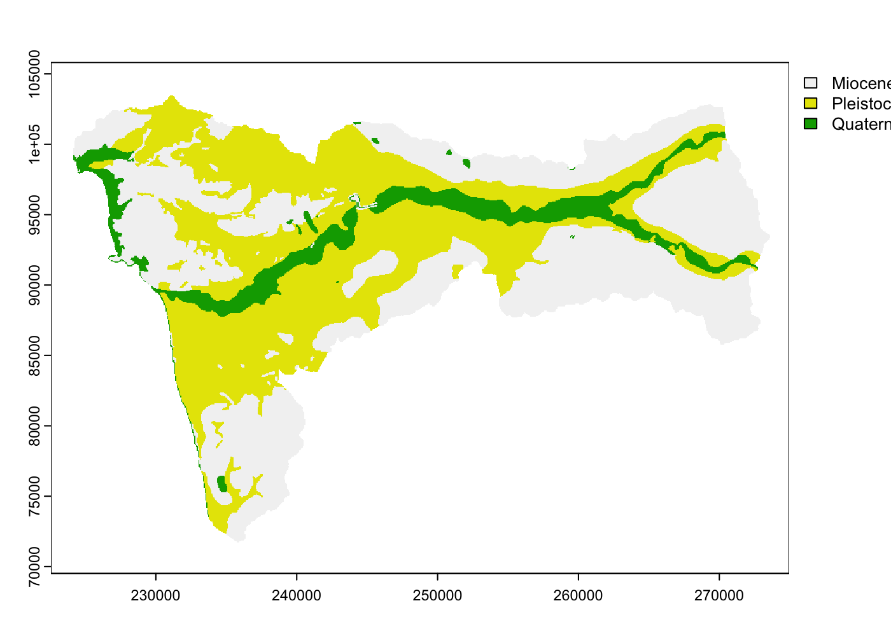

pred_path <- "SOIL CARBON/All_WA/data/Rasters/PredictorStacks/"All WA SOC Prediction Mapping
Path to prediction folder
Load SOC Point Data
hoh_dat <- data.frame(vect("SOIL CARBON/All_WA/data/points/hoh_pts_2855.gpkg"))
mas_dat <- data.frame(vect("SOIL CARBON/All_WA/data/points/mas_pts_2856.gpkg"))
col_dat <- data.frame(vect("SOIL CARBON/All_WA/data/points/col_pts_2855.gpkg"))
wa_dat <- rbind(hoh_dat, mas_dat, col_dat) |>
mutate(GEO = as.factor(GEO), geomorphons = as.factor(geomorphons),
site = as.factor(site), site = forcats::fct_reorder(site,
SOC_stock_spline, .fun = "median")) |>
dplyr::rename_with(~gsub("_median", "", .x, fixed = TRUE))
columns_to_exclude <- c("SOC_stock_spline", "lower_depth")
wa_dat_scale <- wa_dat |>
dplyr::select(sample_ID, lower_depth, SOC_stock_spline, site,
DTM, GEO, WIP, HLI) |>
dplyr::mutate(across(dplyr::where(is.numeric) & !all_of(columns_to_exclude),
~dplyr::case_when(TRUE ~ scale(.))), site = forcats::fct_reorder(site,
SOC_stock_spline, .fun = "median"))Need to get the means and standard deviations of the numeric factor in the dataset to scale the raster input variables
wa_dat_scale_params <- wa_dat |>
dplyr::select(sample_ID, lower_depth, SOC_stock_spline, site,
DTM, GEO, WIP, HLI) |>
dplyr::summarise(across(dplyr::where(is.numeric) & !all_of(columns_to_exclude),
list(mean = mean, sd = sd)))Load in the raster stacks
hoh_stack <- rast("SOIL CARBON/All_WA/data/Rasters/PredictorStacks/Hoh_PredictorStack_Class.tif") |>
terra::subset(c("DTM", "GEO", "HLI", "WIP"))
mas_stack <- rast("SOIL CARBON/All_WA/data/Rasters/PredictorStacks/Mas_PredictorStack_Class.tif") |>
terra::subset(c("DTM", "GEO", "HLI", "WIP"))
col_stack <- rast("SOIL CARBON/All_WA/data/Rasters/PredictorStacks/Col_PredictorStack_Class.tif") |>
terra::subset(c("DTM", "GEO", "HLI", "WIP"))
rast_scale_func <- function(stack, path) {
stack_scale <- stack |>
tidyterra::mutate(DTM = (DTM - wa_dat_scale_params$DTM_mean)/wa_dat_scale_params$DTM_sd,
HLI = (HLI - wa_dat_scale_params$HLI_mean)/wa_dat_scale_params$HLI_sd,
WIP = (WIP - wa_dat_scale_params$WIP_mean)/wa_dat_scale_params$WIP_sd)
writeRaster(stack_scale, paste0(getwd(), "/", path, deparse(substitute(stack)),
"_scale", ".tif"), overwrite = TRUE)
return(stack_scale)
}
hoh_stack_scale <- rast_scale_func(hoh_stack, pred_path)
mas_stack_scale <- rast_scale_func(mas_stack, pred_path)
col_stack_scale <- rast_scale_func(col_stack, pred_path)hoh_stack_scale <- rast("SOIL CARBON/All_WA/data/Rasters/PredictorStacks/hoh_stack_scale.tif")
mas_stack_scale <- rast("SOIL CARBON/All_WA/data/Rasters/PredictorStacks/mas_stack_scale.tif")
col_stack_scale <- rast("SOIL CARBON/All_WA/data/Rasters/PredictorStacks/col_stack_scale.tif")Geology layer is having problems with terra it seems so I’m loading in the vectors and reclassifying
hoh_consolidate_geo <- vect("SOIL CARBON/All_WA/data/Vectors/Hoh_geology_consolidate.shp")
mas_consolidate_geo <- vect("SOIL CARBON/All_WA/data/Vectors/Mas_geology_consolidate.shp")
col_consolidate_geo <- vect("SOIL CARBON/All_WA/data/Vectors/Col_geology_consolidate.shp")
plot(hoh_consolidate_geo, "GEO")
plot(hoh_stack_scale$GEO)

hoh_stack_scale$GEO <- subst(hoh_stack_scale$GEO, from = c(1,
2, 3), c("MioceneEocene", "Pleistocene", "Quaternary"))
##
|---------|---------|---------|---------|
=========================================
mas_stack_scale$GEO <- subst(mas_stack_scale$GEO, from = c(1,
2, 3), c("MioceneEocene", "Pleistocene", "Quaternary"))
col_stack_scale$GEO <- subst(col_stack_scale$GEO, from = c(1,
2, 3, 4), c("MioceneEocene", "Pleistocene", "PreTertiary",
"Quaternary"))
##
|---------|---------|---------|---------|
=========================================
plot(hoh_stack_scale$GEO)
Load in the best model
model <- get(load("SOIL CARBON/All_WA/analysis/models/All_WA_Model3_Spline.RData"))
modeldtm <- get(load("SOIL CARBON/All_WA/analysis/models/All_WA_Model7dtm_Spline.RData"))
summary(modeldtm)
## Linear mixed model fit by maximum likelihood . t-tests use Satterthwaite's
## method [lmerModLmerTest]
## Formula:
## log10(SOC_stock_spline) ~ WIP + HLI + site * DTM + (GEO) + lower_depth +
## (lower_depth | sample_ID)
## Data: wa_dat_scale
## Control: lmerControl(optimizer = "bobyqa")
##
## AIC BIC logLik deviance df.resid
## 382.1 446.9 -175.1 350.1 408
##
## Scaled residuals:
## Min 1Q Median 3Q Max
## -3.2353 -0.4122 0.0680 0.5549 2.4542
##
## Random effects:
## Groups Name Variance Std.Dev. Corr
## sample_ID (Intercept) 0.0499980 0.22360
## lower_depth 0.0000105 0.00324 -0.07
## Residual 0.0748495 0.27359
## Number of obs: 424, groups: sample_ID, 96
##
## Fixed effects:
## Estimate Std. Error df t value Pr(>|t|)
## (Intercept) -0.8873752 0.1951237 98.0510248 -4.548 1.55e-05 ***
## WIP 0.1252423 0.0323911 95.7494104 3.867 0.000201 ***
## HLI -0.0648389 0.0298579 96.5740207 -2.172 0.032336 *
## siteMAS 0.3195374 0.1578437 96.2124748 2.024 0.045702 *
## siteHOH 0.2637532 0.2502198 97.6040500 1.054 0.294446
## DTM -0.0679315 0.1054817 95.8361314 -0.644 0.521106
## GEOPleistocene 0.2800099 0.1398163 98.7127480 2.003 0.047952 *
## GEOPreTertiary 0.1386714 0.2261283 97.4706596 0.613 0.541145
## GEOQuaternary -0.1408225 0.1869504 97.3424771 -0.753 0.453111
## lower_depth -0.0036111 0.0004326 47.0151546 -8.348 7.73e-11 ***
## siteMAS:DTM 0.4200837 0.1748803 96.6190429 2.402 0.018212 *
## siteHOH:DTM -0.0958926 0.2111388 97.8879991 -0.454 0.650713
## ---
## Signif. codes: 0 '***' 0.001 '**' 0.01 '*' 0.05 '.' 0.1 ' ' 1
##
## Correlation of Fixed Effects:
## (Intr) WIP HLI sitMAS sitHOH DTM GEOPls GEOPrT GEOQtr
## WIP 0.248
## HLI -0.013 -0.114
## siteMAS -0.872 -0.297 0.027
## siteHOH -0.681 -0.055 0.007 0.620
## DTM -0.612 -0.078 0.068 0.750 0.487
## GEOPleistcn -0.746 -0.206 -0.013 0.428 0.444 0.025
## GEOPreTrtry -0.467 -0.138 0.081 0.273 0.281 -0.095 0.618
## GEOQuatrnry -0.760 -0.302 0.029 0.558 0.508 0.212 0.798 0.514
## lower_depth -0.060 0.006 0.005 -0.001 -0.003 0.000 0.003 -0.004 0.005
## siteMAS:DTM -0.055 -0.031 -0.031 -0.255 -0.038 -0.591 0.558 0.413 0.324
## siteHOH:DTM -0.048 0.023 -0.011 -0.158 0.517 -0.447 0.420 0.322 0.316
## lwr_dp sMAS:D
## WIP
## HLI
## siteMAS
## siteHOH
## DTM
## GEOPleistcn
## GEOPreTrtry
## GEOQuatrnry
## lower_depth
## siteMAS:DTM 0.007
## siteHOH:DTM -0.001 0.515Generate a prediction
SOC_pred_path <- "SOIL CARBON/All_WA/data/Rasters/SOC_Predictions/"
SOC_pred_func <- function(stack, depths, model, site, path) {
for (i in 1:depths) {
const_df_15 <- data.frame(site = site, lower_depth = 15,
stringsAsFactors = TRUE)
const_df_30 <- data.frame(site = site, lower_depth = 30,
stringsAsFactors = TRUE)
const_df_60 <- data.frame(site = site, lower_depth = 60,
stringsAsFactors = TRUE)
const_df_100 <- data.frame(site = site, lower_depth = 100,
stringsAsFactors = TRUE)
const_df_200 <- data.frame(site = site, lower_depth = 200,
stringsAsFactors = TRUE)
const_df_list <- list(const_df_15, const_df_30, const_df_60,
const_df_100, const_df_200)
predict(stack, model, const = const_df_list[[i]], na.rm = TRUE,
re.form = NA, allow.new.levels = TRUE, cores = (parallel::detectCores() -
2), filename = paste0(getwd(), "/", path, stringr::str_remove(deparse(substitute(stack)),
"stack"), "SOCpredict_", const_df_list[[i]]$lower_depth,
".tif"), overwrite = TRUE)
}
}SOC_pred_func(hoh_stack_scale, model = model, depths = 5, site = "HOH",
path = SOC_pred_path)
SOC_pred_func(mas_stack_scale, model = model, depths = 5, site = "MAS",
path = SOC_pred_path)
SOC_pred_func(col_stack_scale, model = model, depths = 5, site = "COL",
path = SOC_pred_path)
SOC_sum_units <- function(site, depth, path) {
stopifnot(is.character(depth))
depth_list <- list(15, 30, 60, 100, 200)
stopifnot(as.numeric(depth) %in% depth_list)
depth_remove <- if (as.numeric(depth) < 200) {
depth_list[depth_list > as.numeric(depth)]
} else {
1000
}
filelist <- list.files(path, pattern = tolower(site), full.names = TRUE)
filelist_depth <- filelist[!str_detect(filelist, pattern = as.character(depth_remove))]
SOC <- rast(filelist_depth) |>
terra::app(fun = function(i) 10^(i)) |>
sum() * 100
writeRaster(SOC, filename = paste0(getwd(), "/", path, tolower(site),
"SOCsum", depth, ".tif"))
}hoh_SOC_sum200 <- SOC_sum_units(site = "hoh", depth = "200",
path = SOC_pred_path)
mas_SOC_sum200 <- SOC_sum_units(site = "mas", depth = "200",
path = SOC_pred_path)
col_SOC_sum200 <- SOC_sum_units(site = "col", depth = "200",
path = SOC_pred_path)
hoh_SOC_sum100 <- SOC_sum_units(site = "hoh", depth = "100",
path = SOC_pred_path)
mas_SOC_sum100 <- SOC_sum_units(site = "mas", depth = "100",
path = SOC_pred_path)
col_SOC_sum100 <- SOC_sum_units(site = "col", depth = "100",
path = SOC_pred_path)Surface water mask
hoh_mndwi <- rast("SOIL CARBON/All_WA/data/Rasters/Hoh_spectral.tif",
lyr = "MNDWI_median") |>
resample(y = hoh_SOC_sum100)
mas_mndwi <- rast("SOIL CARBON/All_WA/data/Rasters/Mashel_spectral.tif",
lyr = "MNDWI_median") |>
resample(y = mas_SOC_sum100)
col_mndwi <- rast("SOIL CARBON/All_WA/data/Rasters/Colville_spectral.tif",
lyr = "MNDWI_median") |>
resample(y = col_SOC_sum100)
hoh_SOC_sum200mask <- mask(hoh_SOC_sum200, hoh_mndwi <= 0, maskvalues = FALSE,
filename = "SOIL CARBON/All_WA/data/Rasters/SOC_Predictions/hohSOCsum100mask.tif",
overwrite = TRUE)
mas_SOC_sum200mask <- mask(mas_SOC_sum200, mas_mndwi <= 0, maskvalues = FALSE,
filename = "SOIL CARBON/All_WA/data/Rasters/SOC_Predictions/masSOCsum100mask.tif",
overwrite = TRUE)
col_SOC_sum200mask <- mask(col_SOC_sum200, col_mndwi <= 0, maskvalues = FALSE,
filename = "SOIL CARBON/All_WA/data/Rasters/SOC_Predictions/colSOCsum100mask.tif",
overwrite = TRUE)hoh_SOC_sum100mask <- rast("SOIL CARBON/All_WA/data/Rasters/SOC_Predictions/hohSOCsum100mask.tif")
mas_SOC_sum100mask <- rast("SOIL CARBON/All_WA/data/Rasters/SOC_Predictions/masSOCsum100mask.tif")
col_SOC_sum100mask <- rast("SOIL CARBON/All_WA/data/Rasters/SOC_Predictions/colSOCsum100mask.tif")Calculate SOC stocks
C_map_simp <- function(C_map) {
name <- deparse(substitute(C_map))
gt <- (C_map > -999)
cell_size <- cellSize(gt, unit = "ha") |>
mask(mask = gt)
area_tot <- sum(values(cell_size), na.rm = T)
C_mean <- mean(values(C_map), na.rm = T) #mean value of all values of Mg/ha cells
carbon_cell <- C_map * cellSize(gt, unit = "ha") # carbon in Mg per cell which is then added up
# There will be small numbers here because of Mg/ha
TotalC_sum <- sum(values(carbon_cell), na.rm = T)
# cat('Total area =', area_tot, '\nAverage Carbon Stock
# (Mg/ha) =', C_mean, '\ntotal Carbon (Tg) =',
# TotalC_sum/1e6)
return(data.frame(Name = name, Total_area = area_tot, AverageSOC_Mgha = C_mean,
total_Carbon_Tg = TotalC_sum/1e+06, stringsAsFactors = T))
}SOC_df <- data.frame(Name = character(), Total_area = double(),
AverageSOC_Mgha = double(), total_Carbon_Tg = double())
Map_SOC_func <- function(path, sumDepth) {
filelist <- list.files(path, pattern = sumDepth, full.names = TRUE)
df <- data.frame(Name = character(), Total_area = double(),
AverageSOC_Mgha = double(), total_Carbon_Tg = double())
for (i in 1:length(filelist)) {
r <- rast(filelist[[i]])
rc <- C_map_simp(r)
rbind(df, rc)
# plot(r)
}
return(SOC_df)
}
testdf <- Map_SOC_func(SOC_pred_path, "sum100mask")
test <- C_map_simp(mas_100soc)
rbind(test, SOC_df)hoh_100soc <- rast("SOIL CARBON/All_WA/data/Rasters/SOC_Predictions/hohSOCsum100mask.tif")
mas_100soc <- rast("SOIL CARBON/All_WA/data/Rasters/SOC_Predictions/masSOCsum100mask.tif")
col_100soc <- rast("SOIL CARBON/All_WA/data/Rasters/SOC_Predictions/colSOCsum100mask.tif")
SOC_df <- rbind(C_map_simp(hoh_100soc), C_map_simp(mas_100soc),
C_map_simp(col_100soc))
readr::write_csv(SOC_df, "SOIL CARBON/All_WA/data/dataframes/All_WA_MapSOC100mask.csv")SOC_df <- readr::read_csv("SOIL CARBON/All_WA/data/dataframes/All_WA_MapSOC100mask.csv")
## Rows: 3 Columns: 4
## ── Column specification ────────────────────────────────────────────────────────
## Delimiter: ","
## chr (1): Name
## dbl (3): Total_area, AverageSOC_Mgha, total_Carbon_Tg
##
## ℹ Use `spec()` to retrieve the full column specification for this data.
## ℹ Specify the column types or set `show_col_types = FALSE` to quiet this message.
SOC_df |>
mutate(Name = case_match(Name, "hoh_100soc" ~ "Hoh", "mas_100soc" ~
"Mashel", "col_100soc" ~ "Colville"), Total_area = signif(Total_area,
digits = 5), AverageSOC_Mgha = signif(AverageSOC_Mgha,
digits = 3), total_Carbon_Tg = signif(total_Carbon_Tg,
digits = 2)) |>
rename(`Study Area` = Name, `Total Area (ha)` = Total_area,
`Mean SOC Stock (Mg ha^-1)` = AverageSOC_Mgha, `Total SOC Stock (Tg)` = total_Carbon_Tg)
## # A tibble: 3 × 4
## `Study Area` `Total Area (ha)` Mean SOC Stock (Mg ha^…¹ `Total SOC Stock (Tg)`
## <chr> <dbl> <dbl> <dbl>
## 1 Hoh 68993 123 8.5
## 2 Mashel 21927 88.5 1.9
## 3 Colville 33020 37.6 1.2
## # ℹ abbreviated name: ¹`Mean SOC Stock (Mg ha^-1)`Calculate Representativeness using the predictor variables in the modeling approach
- should these include other predictor not in the model?